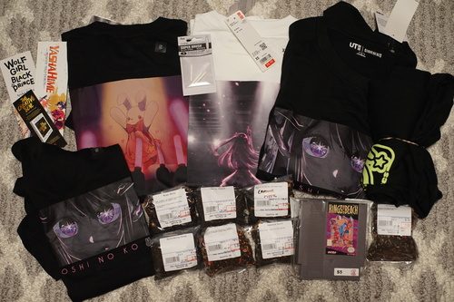

It seems I messed up the Dolpa venue location and ended up in Seattle over the weekend. Not sure how I screwed this up but it won't happen again.
I went into UNIQLO looking for the Yoshitaka Amano art shirts that I saw last month that hit the clearance racks, but they must have sold out. Instead, I found some Oshi no Ko shirts (which you certainly know I am a huge fan of) on clearance. I picked out one with a bunny on stage and 3 more. bunny cute....
I think my first mistake at UNIQLO was trying to find someone to take my money for these items. I looked and looked and all I saw was more cheaply made boring clothes and crowds of people excited to buy them. Eventually, I found the registers and they were all self check out. Not my favorite, but easy enough right?
WRONG. I sat there trying to figure out how the machine was scanning my items. It kept double scanning despite me not having the barcode near it. I kept restarting and restarting and I still couldn't get the machine to stop double (triple and quadrouple) scanning my single shirt!! I finally called over the SCO employee and he said the UPCs don't matter and I just needed 4 items?! I couldn't even figure out how the register was scanning the dang things!
I finally paid after freaking out for 5 minutes. As I left, I realized I had walked in the exit of the self checkout line. Even later, I realized there are RFID tags in each paper tag on the clothes... The grim cyberpunk future is here.
this shirt is very "hatkei"
I've been looking for these for at least a year and kinokuniya finally started stocking them. It's not even a good price!
The only one I could find in XS
This one is for Ryan because he also read the Oshi no Ko wikipedia article (I actually didn't)
Do I need to wear pants with this?
but this time, it's size S
Mostly for my mom, but a little bit for hors
I asked AWL420 to buy me Ace Attorney and he gave me this instead. I'm sure the beach kings are hotties!!!
Anyway, UNIQLO was not worth it!!! I've never even seen Oshi no Ko I just thought the bunny and girl was cute and I'm a weeaboo!!!!!!!
I spent a few minutes deciding if the US version was worth saving $2 on. Came to the conclusion that I wasn't going to buy it for $6 anyway.
I admit it. I'm on an Erasure bender.
This is the best art I've ever seen.
I keep looking for Japan albums and I feel like I would pay more than usual for them, but I can never find any! Where are they?? Hello???
I got trapped by the bargain bin deals again. I didn't really need 10,000 Maniacs or my own copy of Republica, so I convinced myself to put them back just as I walked up to the counter. I didn't put them back though because I was distracted by the dude buying a PS4 in front of me and Alex (the owner) recommending Nier: Automata (me too). This trip, I used my galaxy brain and brought my small CD holder and tossed the jewel cases in Seattle. Good idea!!